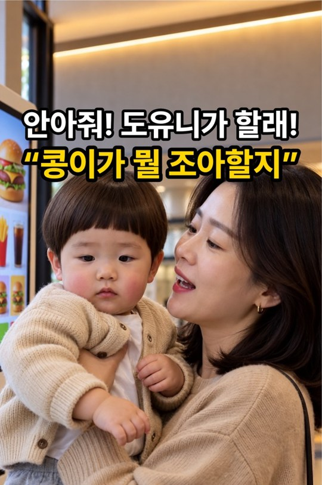
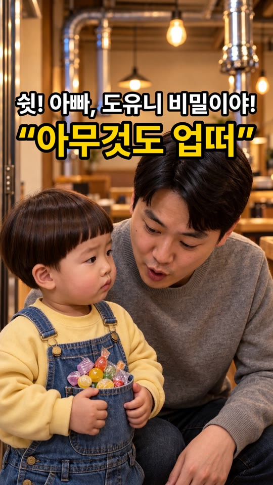
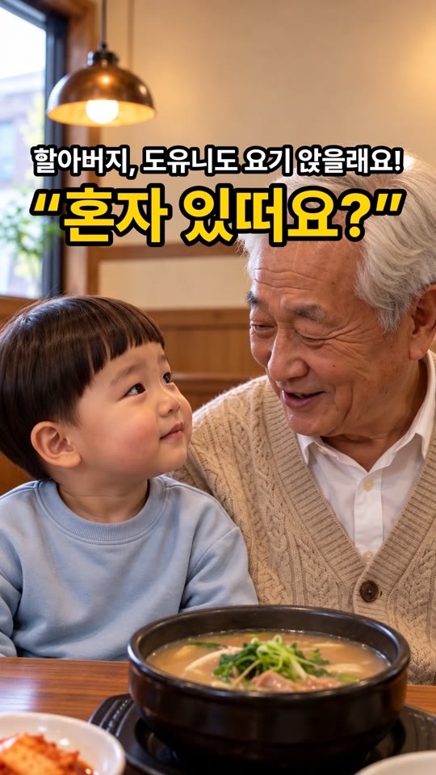
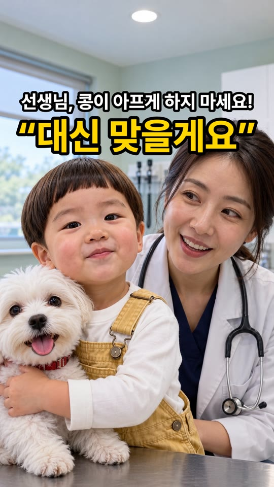

도윤이 제작 영상 (10-23 ~ 10-24)
키오스크 편은 이미 올라갔고, 3편은 업로드 대기 중입니다. 판정은 대표님 몫이에요.
발행됨키오스크 · 10-24 07:02 · 유튜브 + 인스타 릴스 자동 게시
업로드 대기 (승인 순)사탕 바구니 → 국밥집 → 동물병원
예상 슬롯10-24 18:00 · 10-25 07:00 · 10-25 18:00
① 키오스크 주문을 맡은 두 살, 한참 고민한 진짜 이유

발행 뒤 로컬 원본은 드라이브 보관으로 옮겨져 여기엔 링크만 둡니다. 인스타는 이번에 고친 자동 게시로 올라갔어요.
- 도윤안아줘! 도유니가 할래!
- 엄마도윤아, 아직 못 골랐어?
- 도윤응, 도유니 거는 골랐떠.
- 도윤근데 콩이가 뭘 조아할지 모르겠떠.
- 엄마콩이는 못 먹어, 도윤이 것만 골라.
- 도윤그럼 콩이 거는 엄마가 골라!
«거»는 자막 맞춤법, 목소리는 «꺼»로 (3·5·6컷 다시 만들어 교체한 판).
② 고깃집 사탕 바구니가 빈 이유, 두 살 주머니에 있었다

- 도윤쉿! 아빠, 도유니 비밀이야!
- 아빠도윤아… 주머니에 뭐야?
- 도윤…아무것도 업떠.
- 이모어머, 사탕이 다 어디 갔지?
- 도윤이건 이모 거예요… 이것도요!
- 도윤이건 아빠 거예요!
③ 국밥집에서 혼자 드시던 할아버지 옆에 두 살이 앉은 이유

- 도윤할아버지, 도유니도 요기 앉을래요!
- 할아버지허허, 여기 앉을 거야?
- 아빠아이고 죄송합니다, 우리 자리는 저기야!
- 도윤할아버지 혼자 있떠요? 도유니가 친구 해 줄게요!
- 할아버지허허… 고맙다, 친구 생겼네.
- 도윤아빠도 요기! 할아버지는 도유니 친구예요!
확인해 주세요: 6컷은 시작 그림보다 가까운 구도로 바뀌어, 뚝배기가 도윤이 앞에 놓여 보입니다(4컷과 같은 배치).
고친 것: 6컷에 도윤이가 두 명 나오던 결함. 명세가 «빈 의자»처럼 그림에 없는 것을 말해 생긴 일이라, 명세를 그림대로 고쳐 6컷만 다시 만들었어요.
④ 콩이 대신 주사 맞겠다던 두 살, 선생님 한마디에

- 도윤선생님, 콩이 아프게 하지 마세요!
- 수의사콩이 주사 한 번만 맞으면 돼요~
- 도윤그럼 도유니가 대신 맞을게요!
- 엄마어머, 도윤이 멋있다~
- 수의사그래? 그럼 도윤이도 한 대 맞을까?
- 도윤…콩이만 맞아요!
확인해 주세요: 수의사가 2컷(머리 풂)과 5컷(머리 묶음)에서 조금 달라 보입니다. 마지막 컷은 «콩, 콩이만 맞아요»처럼 머뭇거리며 말해요.
고친 것: 시작 그림이 모두 넓은 방 구도라 컷 안에서 클로즈업으로 튀던 것 → 클로즈업 그림으로 다시. 화면 밖 인물을 «화면에 있다»로 적어 낯선 사람·파란 옷 도윤이가 생기던 것 → 명세 수정 + 같은 실수를 막는 검사 추가. 썸네일은 처음판이 도윤이 옷(줄무늬)·콩이가 틀려 다시 만들었어요.